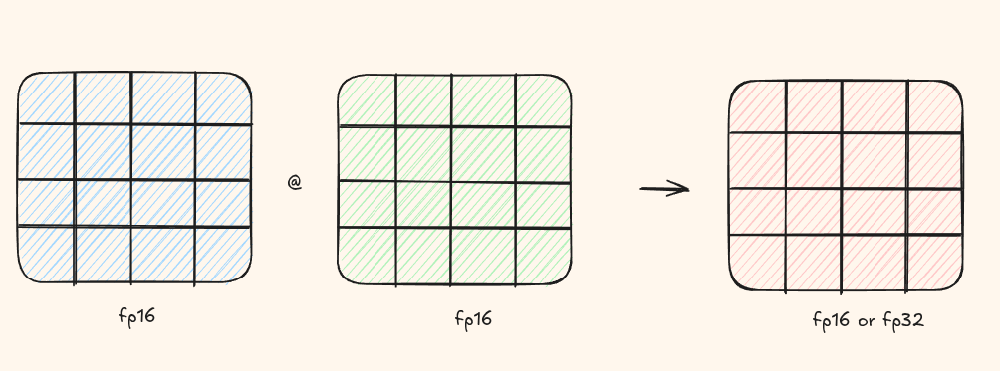
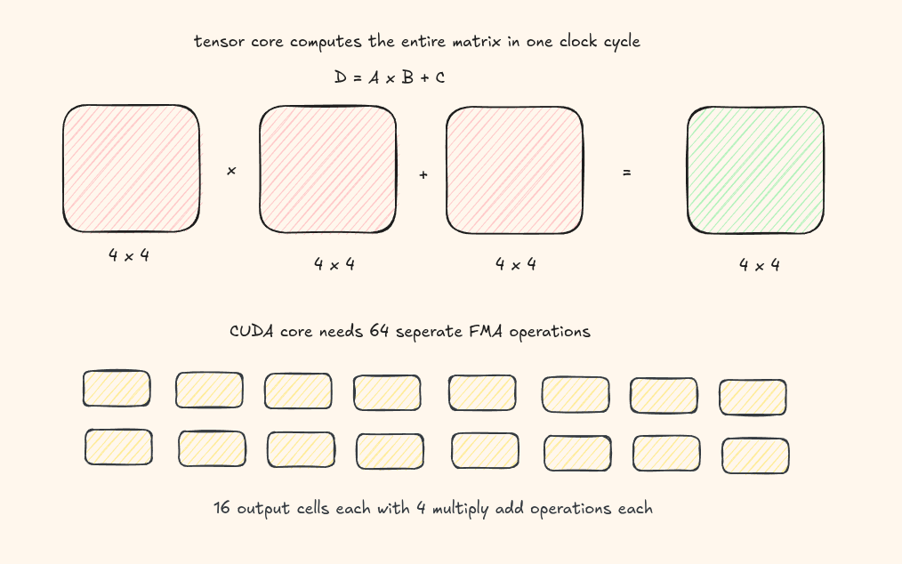

This article will take you through Tensor Cores and how to use CUDA's WMMA API for high-performance matrix operations.
What Are Tensor Cores?
Introduced in NVIDIA's Volta architecture, Tensor Cores are specialized hardware units designed for performing matrix multiplication and accumulation operations extremely fast. They multiply two half precision(fp16) matrices and then accumulate then in an fp16/fp32 matrix.

How CUDA Cores vs Tensor Cores Work
CUDA Cores: Element by Element
A CUDA core executes one instruction on one piece of data per clock cycle. When you compute c = a * b + c,
it's a fused multiply-add (FMA) on a single number.
To add two vectors of size 32, you need 32 CUDA cores working in parallel - each adding one pair of elements simultaneously.
Tensor Cores: Whole Matrix at Once
Tensor cores are built for matrix multiply-accumulate: \( D = A \times B + C \), where A, B, C, and D are matrices.
A single tensor core can multiply a 4×4 matrix with another 4×4 matrix in one cycle - that's 64 FMA operations!

Introducing the WMMA API
CUDA 9.0 introduced the WMMA (Warp-level Matrix Multiply and Accumulate) API, giving developers direct access to tensor cores from CUDA code.
The WMMA API lets you perform \( D = A \times B + C \) at the warp level. A warp is a group of 32 threads, and together they cooperatively compute one matrix tile.
Supported Matrix Sizes
Each warp can handle only specific tile sizes. The most common tile size is 16 x 16 x 16. Other supported sizes include:
- 8 x 8 x 16
- 16 x 8 x 16
- 8 x 16 x 16
- 32 x 8 x 16
- 8 x 32 x 16
For the full list, see the CUDA Programming Guide.
Deep Dive into the API
The fragment class is a warp-level storage container that holds matrix tiles
across all 32 threads in a warp.
template<typename matrix, int m, int n, int k, typename T, typename Layout>
class fragment;Let's break down each template parameter:
| Parameter | Description |
|---|---|
matrix |
Which matrix: wmma::matrix_a, wmma::matrix_b, or wmma::accumulator |
m, n, k |
Tile dimensions (e.g., 16, 16, 16) |
T |
Data type: half (fp16), float, etc. |
Layout |
Memory layout: wmma::row_major or wmma::col_major |
The Three Core Functions
1. Loading Data: load_matrix_sync
void load_matrix_sync(fragment, data_ptr, elements);Load a matrix tile from global or shared memory into a fragment. If you donot load the correct matrix tile sizes, it will result in an error.
| Parameter | Description |
|---|---|
fragment |
the fragment class to load the tile |
data_ptr |
pointer to the first element of the matrix we want to load |
elements |
number of elements per row/column |
#include <mma.h>
using namespace nvcuda;
__global__ void wmma_kernel(half *a, half *b, float *c) {
wmma::fragment<wmma::matrix_a, 16, 16, 16, half, wmma::row_major> frag_a;
wmma::fragment<wmma::matrix_b, 16, 16, 16, half, wmma::col_major> frag_b;
wmma::fragment<wmma::accumulator, 16, 16, 16, float> frag_c;
// Load from global memory (use __syncthreads() if loading from shared memory)
wmma::load_matrix_sync(frag_a, a, 16);
wmma::load_matrix_sync(frag_b, b, 16);
wmma::load_matrix_sync(frag_c, c, 16);
}2. Perform MMA mma_sync
Perform the actual matrix multiplication using tensor cores.
// Perform the matrix multiply-accumulate: D = A * B + C
wmma::mma_sync(frag_c, frag_a, frag_b, frag_c);The last frag_c is both input (initial value to add) and output (result).
3. Storing Results: store_matrix_sync
Write the computed fragment back to memory.
// Store result back to global memory
wmma::store_matrix_sync(c, frag_c, 16, wmma::mem_row_major);
Complete Example
Here's a full working example of WMMA for 16×16 matrix multiplication:
__global__ void wmma_matmul(
const __half* __restrict__ A,
const __half* __restrict__ B,
float* __restrict__ C,
int m, int n, int k
){
// 256 threads divided into 8 warps laid out as
// 4 rows and 2 cols
const int warp_id = threadIdx.x / WARP_SIZE;
const int warp_row = warp_id / WARPS_X;
const int warp_col = warp_id % WARPS_X;
// where should the output be in the C matrix
const int cRow = blockIdx.y * BLOCK_TILE_M + warp_row * WMMA_M;
const int cCol = blockIdx.x * BLOCK_TILE_N + warp_col * WMMA_N;
if (cRow >= m || cCol >= n) return;
wmma::fragment aFrag;
wmma::fragment bFrag;
wmma::fragment accFrag;
wmma::fill_fragment(accFrag, 0.0f);
for(int kiter = 0; kiter < K; kiter += WMMA_K){
const int aRow = cRow, aCol = kiter;
const int bRow = kiter, bCol = cCol;
if (aRow < m && aCol < k && bRow < k && bCol < n)
{
wmma::load_matrix_sync(aFrag, A + aRow * k + aCol, k);
wmma::load_matrix_sync(bFrag, B + bRow * n + bCol, n);
wmma::mma_sync(accFrag, aFrag, bFrag, accFrag);
}
}
wmma::store_matrix_sync(C + cRow * n + cCol, accFrag, n, wmma::mem_row_major);
}